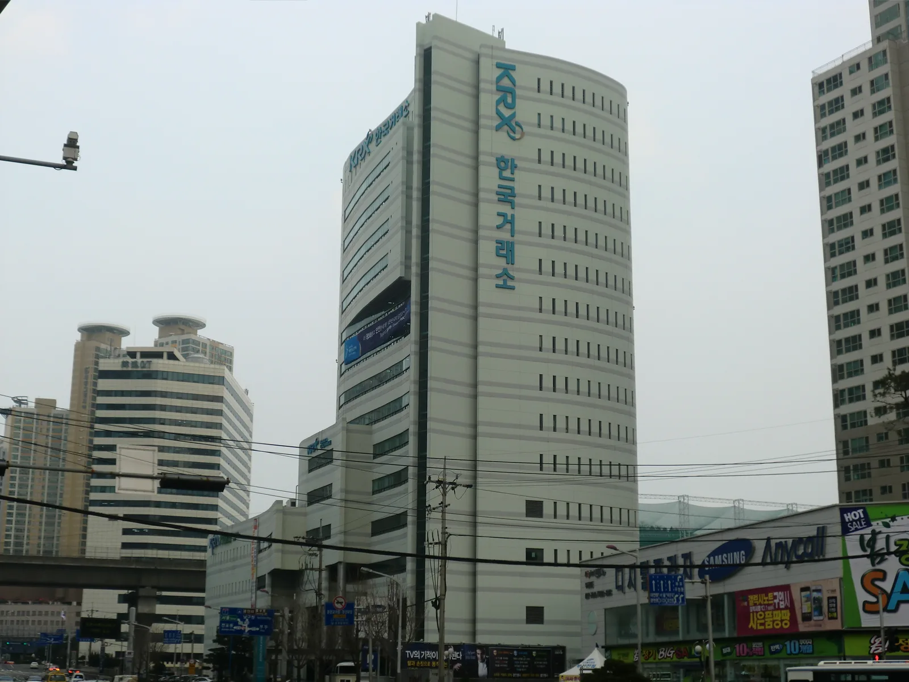
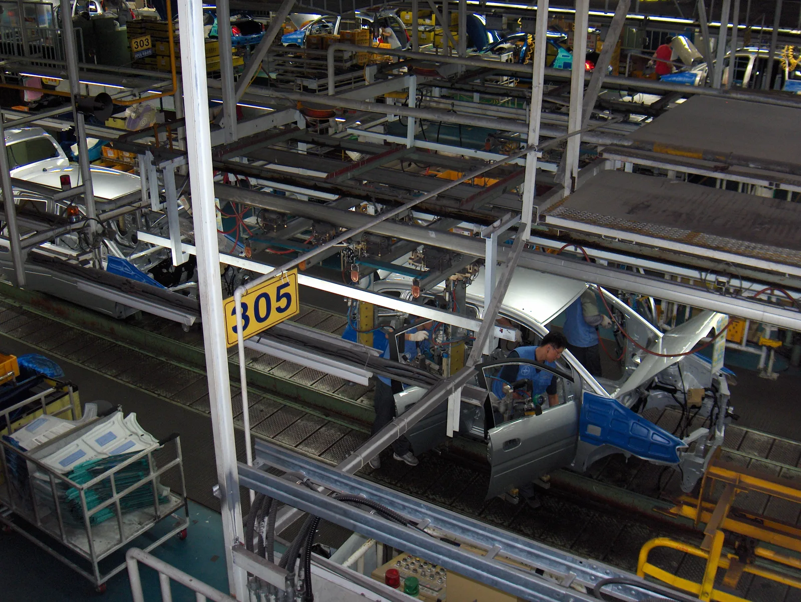
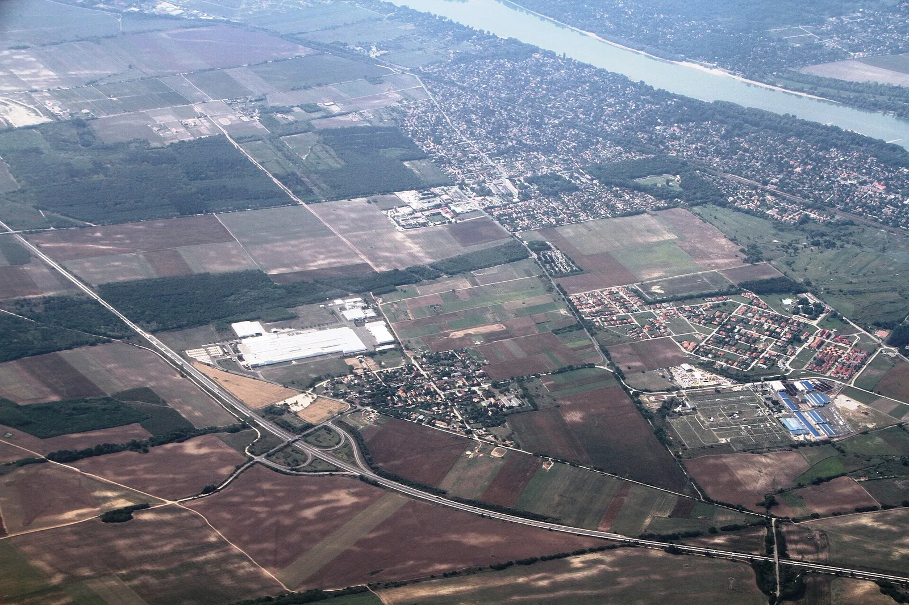

▲ 한국거래소가 22일 자체 산업분류체계 'KRICS' 구축을 완료했다고 밝혔다 ⓒ Wikimedia Commons (Hyolee2, CC BY-SA 3.0)
"배터리는 화학, 반도체는 IT부품의 하위 항목." 지금까지 국내 증시에서 통용돼온 산업분류체계에서 이 두 업종은 독립된 대접을 받지 못했다. 글로벌 표준분류(GICS 계열)를 그대로 들여와 쓰다 보니, 정작 한국 증시를 이끄는 주도 업종이 곁가지 취급을 받아온 셈이다.
한국거래소(KRX)가 22일 이 틀을 갈아엎었다. 자체 산업분류체계 'KRX 산업분류체계(KRICS·KRX Industry Classification Standard)' 구축을 완료했다고 밝히면서다. 2024년 외부 연구 용역을 시작해 약 2년에 걸쳐 방법론을 다듬은 결과, 자동차·반도체·2차전지처럼 한국 증시 비중이 큰 산업이 별도 항목으로 독립했다.
1. KRICS란 무엇인가 — 20년 만의 산업분류 대수술
KRICS는 한국거래소가 국내 증시의 산업 구성과 상장기업 특성을 반영해 새로 만든 '증시 전용' 분류체계다. 그동안 국내 상장사 분류는 국제 표준분류를 준용해 왔는데, 이 체계는 미국·유럽 등 선진 증시의 산업 구조를 기준으로 설계돼 있어 한국 증시의 특성을 충분히 담아내지 못한다는 지적이 꾸준히 제기돼 왔다.
| 단계 | 구분 | 개수 |
|---|---|---|
| 1단계 | 섹터 | 9개 |
| 2단계 | 산업그룹 | 24개 |
| 3단계 | 산업 | 60개 |
| 4단계 | 하위산업 | 129개 |
거래소는 이 작업을 위해 2024년부터 외부 연구 용역을 발주해 약 2년간 자동차·반도체·2차전지 등 국가 핵심 산업은 물론, 인공지능(AI)·로봇·신재생에너지 같은 신성장 산업까지 반영해 세부 기준을 마련했다.
2. 기존 분류의 문제점 — 배터리는 화학, 반도체는 IT부품 밑에
가장 자주 지적된 문제는 국내 증시 시가총액 상위를 차지하는 업종들이 정작 독립된 산업으로 대접받지 못했다는 점이다. 기존 체계에서 2차전지 관련 기업들은 '화학' 섹터의 하위 항목으로, 반도체는 'IT부품'이라는 큰 카테고리 아래 뭉뚱그려져 있었다.
📍 "곁가지" 취급의 실제 사례
2차전지·반도체는 이미 코스피·코스닥 시가총액 상위권을 장기간 차지해온 업종이지만, 기존 분류상에서는 화학·IT부품이라는 상위 카테고리에 가려 업종별 자금 흐름이나 밸류에이션을 독립적으로 비교하기 어려웠다. 자동차 역시 부품업까지 포괄하는 명확한 자체 섹터가 없어, 완성차·부품·모빌리티 서비스 기업들이 흩어져 분류돼 있었다.

▲ 2차전지 셀은 그동안 '화학' 섹터 하위 항목으로 묶여, 독립적인 업종 비교가 쉽지 않았다 ⓒ Wikimedia Commons
3. 자동차·배터리 업종에 미치는 영향 — '모빌리티' 신설, 배터리·반도체 독립
이번 개편에서 가장 눈에 띄는 변화는 '모빌리티' 섹터의 신설이다. 거래소는 자동차·부품과 여객운송을 하나로 묶어 자율주행, 모빌리티 서비스 확산 등 산업 트렌드를 반영한 1단계 섹터로 새로 만들었다. 완성차 업체뿐 아니라 부품사, 운송 서비스 기업까지 하나의 산업축으로 재편되는 셈이다.
✅ 3단계 산업으로 독립된 업종
· 배터리 — 산업재 섹터 내 조선·선박과 함께 화학에서 분리돼 별도 산업으로 독립
· 반도체 — IT부품이라는 큰 틀에서 벗어나 독자 산업으로 재분류
· 디스플레이 — 반도체와 마찬가지로 IT 업종에서 세분화
· 조선 및 선박 — 산업재 내 독립 산업으로 신설
· 문화 엔터테인먼트·게임 서비스 — 미디어·콘텐츠 섹터 내 독립 산업으로 분류

▲ 자동차·부품과 여객운송을 통합한 '모빌리티' 섹터가 KRICS의 1단계 산업으로 새로 생겼다 ⓒ Wikimedia Commons (Taneli Rajala, CC BY-SA 3.0)
보도에 따르면 이런 재분류로 현대차·기아, LG에너지솔루션, 삼성SDI 등 관련 상장사들은 산업군 내 위상을 새롭게 평가받을 것으로 전망된다. 예컨대 배터리 산업이 화학 섹터에서 분리돼 독립 산업으로 집계되면, 그동안 화학 업종 지수·펀드에 함께 묶여 있던 2차전지 기업들의 실적·주가 흐름이 훨씬 선명하게 드러날 수 있다.

▲ 국내 배터리 3사의 생산기지는 국내외에 걸쳐 있으며, 이번 개편으로 배터리 산업 전체의 실적 흐름을 별도로 추적하기 쉬워진다 ⓒ Wikimedia Commons
4. 투자자 관점의 시사점 — 업종 비교, 테마 지수·ETF 개발 가속
산업 분류가 명확해지면 가장 먼저 달라지는 것은 '업종 내 비교'의 정확도다. 지금까지는 배터리 관련 기업의 밸류에이션(주가수익비율 등)을 평가할 때 화학 업종 전체 평균과 비교할 수밖에 없어, 업종 특성이 다른 정유·석유화학 기업과 뒤섞여 왜곡이 생기기 쉬웠다.
📍 산업·테마형 지수 개발 전망
거래소와 업계는 KRICS 도입으로 산업별·테마형 지수 개발이 한층 활발해질 것으로 내다본다. 모빌리티, 배터리, 반도체처럼 명확히 독립된 산업 분류가 갖춰지면, 이를 추종하는 업종 특화 ETF나 지수 상품을 설계하기가 훨씬 수월해지기 때문이다. 다만 구체적인 신규 지수 종목·출시 일정은 이번 발표에 포함되지 않았으며, 10월 26일 분류 결과 공개 이후 후속 상품 기획이 이어질 것으로 예상된다.
KRX 인덱스 홈페이지에서는 10월 26일부터 상장종목별 산업분류 결과를 확인할 수 있을 예정이다. 관련 보도 바로가기
✅ 투자자가 눈여겨볼 지점
· 업종 비교 기준 변화 — 배터리·반도체 관련주를 더 이상 화학·IT부품 전체 평균과 비교하지 않아도 됨
· 모빌리티 섹터 신설 — 완성차·부품·운송서비스 기업이 하나의 산업군으로 묶여 포트폴리오 구성 기준이 달라질 수 있음
· 지수 편입 시점 — 하반기 코스피200·코스닥150 등 대표지수에 순차 적용 예정이므로, 지수 추종 자금의 업종별 쏠림 변화를 지켜볼 필요
· 신규 테마 상품 — 배터리·반도체·모빌리티 특화 지수·ETF 출시 여부는 10월 분류 결과 공개 이후 구체화될 전망
5. 향후 일정 — 방법론 시행부터 대표지수 적용까지
KRICS는 발표와 동시에 바로 전면 적용되는 것이 아니라, 단계적으로 시행된다. 거래소가 밝힌 일정은 다음과 같다.
| 시점 | 내용 |
|---|---|
| 2026년 9월 23일 | 'KRX 산업분류체계 방법론' 시행 개시 |
| 2026년 10월 26일 | KRX 인덱스 홈페이지를 통해 상장종목별 산업분류 결과 공개 |
| 2026년 하반기 | 코스피200, 코스닥150 등 대표지수에 순차 적용 |
📍 기존 지수·상품에 미치는 영향
대표지수 적용이 이뤄지면 기존 업종별 지수 구성 종목이나 섹터 ETF의 편입 비중이 조정될 가능성이 있다. 다만 이번 발표에서는 세부 적용 방식이나 기존 지수 개편 일정까지 구체적으로 공개되지는 않아, 실제 지수 재구성 방식은 향후 거래소의 추가 안내를 지켜볼 필요가 있다.
6. 요약
한국거래소가 20년 가까이 이어온 국제 표준 기반 분류를 벗어나, 국내 증시 특성을 반영한 자체 산업분류체계 'KRICS'를 도입했다. 9개 섹터·24개 산업그룹·60개 산업·129개 하위산업의 4단계 구조로, 자동차·여객운송을 묶은 '모빌리티'가 새 섹터로 생기고, 배터리·반도체·디스플레이·조선 및 선박이 독립 산업으로 분류됐다.
그동안 화학·IT부품 하위 항목에 묻혀 있던 배터리·반도체가 독립 산업으로 서게 되면서, 현대차·기아·LG에너지솔루션·삼성SDI 등 관련 상장사는 업종 내 위상을 새롭게 평가받을 전망이다. 투자자 입장에서는 업종별 밸류에이션 비교가 명확해지고, 배터리·반도체·모빌리티 특화 테마 지수나 ETF 개발도 한층 탄력을 받을 것으로 기대된다.
시행은 9월 23일 방법론 발효, 10월 26일 분류 결과 공개, 하반기 대표지수 적용 순으로 단계적으로 진행된다. 구체적인 테마 상품 출시 일정은 아직 확정되지 않아, 10월 분류 결과 공개 이후 후속 소식을 지켜볼 필요가 있다.